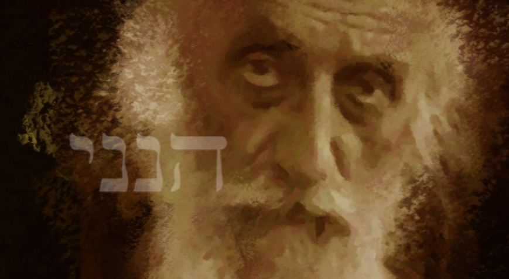
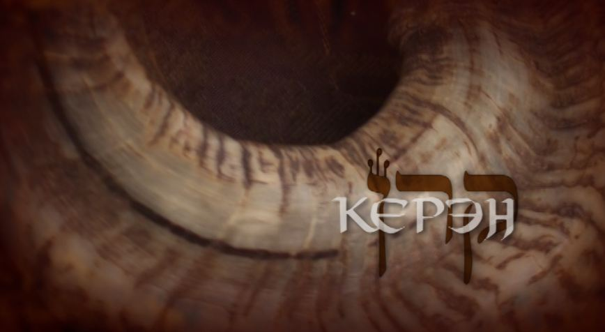
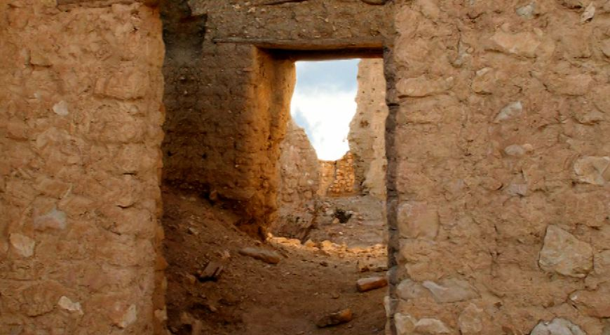
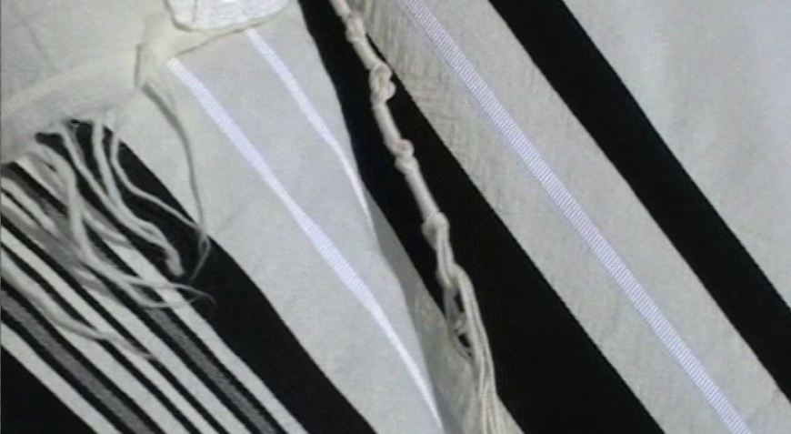
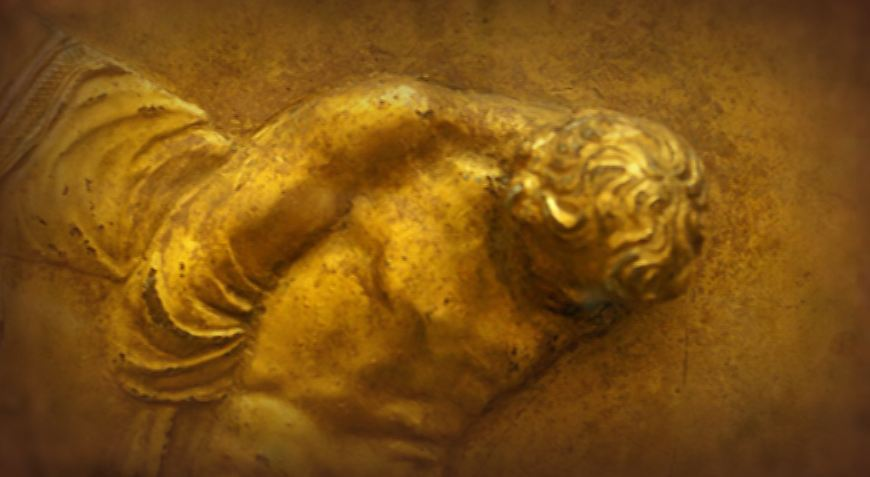
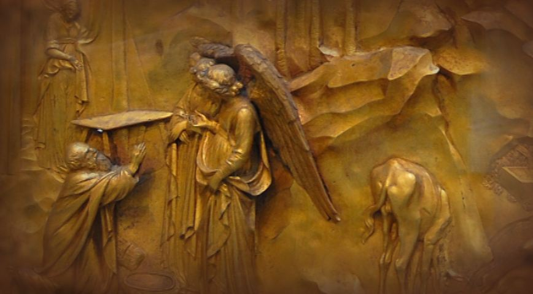
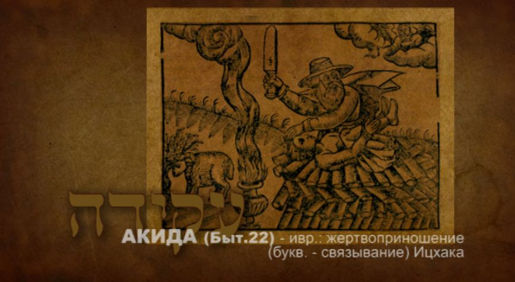

The Voice of the Shofar, Part 2. Keren: the Calling
The horn of the sacrificial animal has three names. Each of them carries a special message from the Most High, and each carries a special, perfect action. We spoke about this in the previous part, "A High Calling".
The calling and the One who calls




The oldest of the musical instruments still in use, the shofar traces its lineage to the events connected with our father Avraham. Jewish tradition calls this Torah narrative the Akedah, known in English as "the sacrifice of Isaac". (Akedah is Hebrew for "binding", since Yitzhak was bound before Avraham laid him on the altar.)
The weekly Torah reading of the Akedah is especially important for understanding the essence of the first of the names of the shofar, keren, and for revealing its depth. (As we have said, there are three names in all: keren, shofar and yovel.) It is in this chapter that we find the very first mention of the word keren in the Bible. Later this horn, the keren, would become a musical instrument full of symbolic meaning, whose voice pierces both Covenants. We are speaking of the horn of the ram that God provided for Himself and that Avraham offered up as a burnt offering in place of Yitzhak.



(Gen. 22:1–11)
1. And it came to pass after these things, that God tried Avraham, and said unto him:
2. "Avraham!" And he said: "Here am I." And He said: "Take, I pray, thy son, thine only son, whom thou lovest, even Yitzhak, and get thee into the land of Moriah; and offer him there for a burnt offering upon one of the mountains which I will tell thee of."
3. And Avraham rose early in the morning, and saddled his ass, and took two of his young men with him, and Yitzhak his son; and he cleaved the wood for the burnt offering, and rose up, and went unto the place of which God had told him.
4. On the third day Avraham lifted up his eyes, and saw the place afar off.
7. And Yitzhak spoke unto Avraham his father, and said: "My father." And he said: "Here am I, my son." And he said: "Behold the fire and the wood; but where is the lamb for a burnt offering?"
8. And Avraham said: "God will provide Himself the lamb for a burnt offering, my son." So they went both of them together.
9. And they came to the place which God had told him of; and Avraham built the altar there, and laid the wood in order, and bound Yitzhak his son, and laid him on the altar, upon the wood.
10. And Avraham stretched forth his hand, and took the knife to slay his son. 11. And the angel of the LORD called unto him out of heaven, and said: "Avraham, Avraham." And he said: "Here am I…"
The calling and the One who calls
Avram was seventy-five years old when the Most High called him out of Haran (Gen. 12:1–4). And the LORD gave our father a new name, Avraham, meaning "father of a multitude of nations": a name that carries his purpose and shows how it is to be fulfilled, through a miraculous fatherhood.
So the Eternal One revealed to Avraham an everlasting calling. He laid a great purpose on him and on his descendants: to be a blessing to all nations. Perhaps it was then that Avraham first heard in his heart the calling sound of the horn, the keren.
We come into this world to fulfil our calling, but no one can call himself. A person can only accept or refuse the calling that the Most High has appointed for him.
Often, without thinking, we separate the calling from the One who calls, the creation from its Creator. And quite often we become so absorbed in our purpose, however lofty, that we set aside or even forget the One who created us, who called us into life, and without whom our calling has no meaning.
Only God can give a person wisdom, knowledge, understanding and talents. Only He is able to foresee and provide everything we need in order to realise ourselves and fulfil our purpose.
Avraham's calling, like every calling, is like a ray of light that shows the direction.
Our calling stretches into eternity if we stay faithful to the One who calls. It is like a ray aimed into infinity. A ray of light has a beginning, a source; without it there can be no light. The source keeps the light, gives it strength, sustains it and spreads it everywhere.
In Hebrew this ray of light is keren: קֶרֶן (H7161), 1. a ray; 2. a horn; 3. figuratively, might, glory.
That is, it is the same word keren which, as we said, means the horn of an animal and is one of the three names of the shofar. It is also used of the "horn" of a people or of a person, meaning their glory and calling, as it is written: "u-virtsonkha tarum karneinu", "in Thy favour our horn is exalted" (Ps. 89:17).
A calling is always joined to sacrifice
Sacrifice and calling: these are the two important things at the centre of the Akedah narrative. And it is deeply symbolic that the second mention of the horn, keren, in Scripture concerns God's command about the altar. Moshe built it in the wilderness after the heavenly pattern: "And thou shalt make the horns of it upon the four corners thereof; the horns thereof shall be of one piece with it…" (Exod. 27:2).
It is in connection with the altar that we meet the word horn, keren, most often. Of course the horn of the altar is not meant for blowing, but it prepares the way for the name keren of the sounding horn. The horn of the altar on earth is closely bound to the horn calling from heaven. The Torah's repeated mention of the horns of the altar is a reminder that glory and calling (keren) are inseparable from sacrifice and testing.
A great test came upon Avraham, a test of faithfulness. God turns to him with a terrible request: "Take thy son… and offer him to Me."
In testing Avraham, God asked him to give up his son, and left him free to choose.
It truly was a request, though most translations hide this and make it sound like an order. In the Hebrew original, "kakh na et binkha, et yehidkha…", the words express a request. Literally it should read: "Take, I pray thee, your son…" or "Please, take your son…"
Archaeologists say that in the land of Canaan, inhabited at that time by pagans, there was a rite of sacrificing the firstborn. When founding a house or a city, or starting any important undertaking, they would sacrifice a firstborn child. In this way they "bought" the favour of the "gods", so that the undertaking, the city or the house would prosper and stand for a long time. In the eyes of whoever offered this bloody human sacrifice, it was a necessary condition for a blessed future.
Avraham's readiness to carry out the words he heard and follow the call cannot be explained by the motives that drove the Canaanites to sacrifice their children.
Avraham had to do the opposite of what the pagans did: to offer up his son in order to give up that very future of his own free will, to renounce what he had striven for over many years. He had to sacrifice his dream, his purpose, which depended on Yitzhak. For Yitzhak, though neither the first nor the last of his sons, was the son of the promise.
Yitzhak was the ray (keren) aimed into eternity and carrying the light of blessing to all nations; he was Avraham's glory (keren). The seal of the Most High was upon him; he was the horn (keren) stretched forward. In him was Avraham's calling. In this sense he was the only one. In losing him, Avraham was losing everything a man can lose. He was losing himself.
Avraham would gladly have given his own life to God, offered himself as the sacrifice. Yitzhak would remain, and so his life would not have been in vain: it had borne great fruit. No, it would not have been in vain; his dream, his calling, the thing he had longed for with all his heart, had come true.
There he stands, a very old man, the happiest father who ever walked the face of the earth. He is blessed, honoured and rich, and he has fathered a son, against everything and everyone, against nature itself: at a hundred years old he fathered a son. The son has grown up and become strong, he stands firmly on his feet now, his Yitzhak, his laughter and his joy.
And now Avraham has someone to hand everything on to: his property, his experience, his knowledge, which he was sure would certainly come true… What was promised him would surely be fulfilled. As an old man, seeing the lamp of his life almost gone out, he had received a great meaning, a goal, a knowledge he could never have dreamed of, a calling (KEREN) such as no one living before him had received.
God had promised him many descendants, a great nation, a holy nation, a nation of kings, a nation in which all the families of the earth would be blessed. Eternal redemption would come from him. And every tongue on earth would glorify with great praise the King of the Universe, the Artist, the Creator… his Friend. Yes, his friend was the One who made heaven and earth, who commanded the sun and the stars, and whom the waters of the seas obeyed. And more than once Avraham had known the boundless generosity of this Friend, His great mercy and faithfulness, His unceasing, boundless love.
And now the Friend invited him to prove a love that would also know no bounds, if one can expect boundless love from a limited human being at all. Love without bounds…
For Avraham it meant giving up for the sake of his love and friendship everything he had and owned, all that made up his dream and joy, his priesthood, his kingdom, his great blessing: his Yitzhak… As it is said (Deut. 6:5): "ve-ahavta et Adonai Elohekha… me'odekha", Heb.: "And thou shalt love the LORD thy God with all thy heart, and with all thy soul, and with all thy might."
Avraham stood shaken by what he had heard. "Take thy son…"
Perhaps even then he heard in his heart that special calling voice of the shofar, alarming and terrible, simple and great. His heart trembled as soon as it recognised those piercing vibrations.
Whenever the calling voice of the shofar, the KEREN, sounds, it reminds us of calling and sacrifice. The voice of the shofar is always the voice of sacrifice, the desperate cry of a sacrificial animal led to the slaughter.
(Gen. 22:11–18)
11. And the angel of the LORD called unto him out of heaven, and said: "Avraham, Avraham." And he said: "Here am I."
12. And he said: "Lay not thy hand upon the lad, neither do thou any thing unto him; for now I know that thou art a God-fearing man, seeing thou hast not withheld thy son, thine only son, from Me."
13. And Avraham lifted up his eyes, and looked, and behold behind him a ram caught in the thicket by his horns. And Avraham went and took the ram, and offered him up for a burnt offering in the stead of his son.
14. And Avraham called the name of that place "The LORD will see"; as it is said to this day: "In the mount where the LORD is seen."
15. And the angel of the LORD called unto Avraham a second time out of heaven,
16. and said: "By Myself have I sworn, saith the LORD, because thou hast done this thing, and hast not withheld thy son, thine only son,
17. that in blessing I will bless thee, and in multiplying I will multiply thy seed as the stars of the heaven, and as the sand which is upon the seashore; and thy seed shall possess the gate of his enemies;
18. and in thy seed shall all the nations of the earth be blessed; because thou hast hearkened to My voice."
***
So the first name of the lamb's horn, keren, contains the Creator's calling to each one of us. What is the meaning of the second name, shofar, its symbolism and its mystery? We will speak about this in the next article.
See also the other parts of "The Voice of the Shofar":
— Part 1
— Part 3
— Part 4
— Part 5
***
See also my film on this subject, "The Voice of the Shofar". Studio TORAH-ART. Composer Daniel Kruglov.
***
More video on keeping the commandment of blowing the shofar: see here.
Author: Ephraim Kalish / Torah-Art
 The Voice of the Shofar, Part 5. Israel, a Shofar in the Hands of the Creator
The Voice of the Shofar, Part 5. Israel, a Shofar in the Hands of the Creator The Voice of the Shofar, Part 4. Yovel: the Jubilee
The Voice of the Shofar, Part 4. Yovel: the Jubilee Matzah, the Unleavened Bread: How to Make Matzah (Recipe and Video)
Matzah, the Unleavened Bread: How to Make Matzah (Recipe and Video)